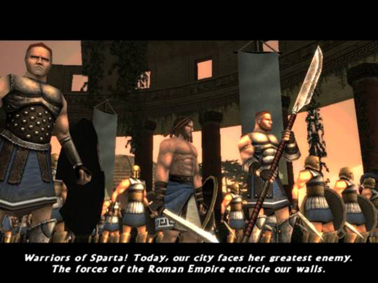

A história começa contra seu irmão, não espera, isso é outra coisa.
O jogo começa com Castor, um dos personagens, narrando para nós sobre a tentativa romana de conquistar toda a Grécia. Ele explica que a maioria dos veteranos do exército espartano já foram mortos, e que agora o exército é formado por novatos, em sua maioria.
A primeira vez que vemos nosso personagem, o Espartano (sim, esse é o nome dele), ele está ouvindo o discurso do rei Leonidas, um pouco antes de mais uma batalha contra os romanos começar. Enquanto escuta as palavras do rei, o deus Ares fala com nosso personagem e a partir daí a história se desenrola.
